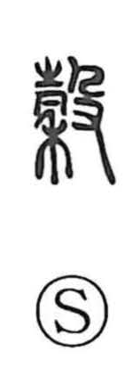

Explanation
合 pictures a ritual container with a deep lid fitted over it. The lower 口 is the vessel holding written prayers or pledges; the upper part is its cover. The fit of lid and vessel supplies the concrete sense of coming together.
Documents of agreement were enclosed in such a container. Closing it marked an agreement reached, and the word extends to deliberating together and taking part in a meeting. Some related early forms place two people face to face around 合, making the shared consultation visible.
From fitting and agreeing come joining, matching, answering, and being suited to something. Facing a counterpart can also give opposing or fighting. The same word names a container and a measure of capacity. These uses grow from fit, accord, and the matching of two sides.